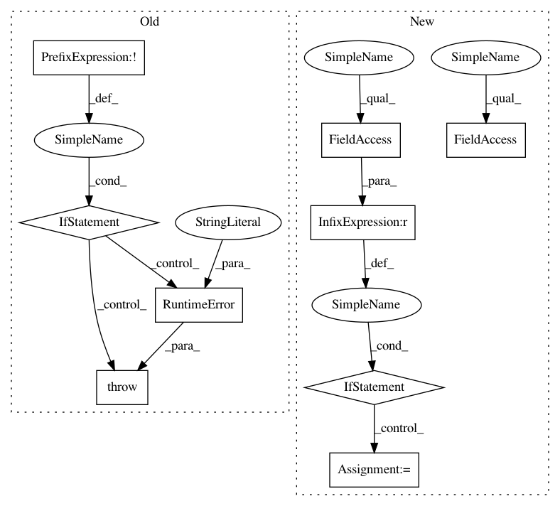

22361f98c2c8683715a507f59a5884071d672826,gpytorch/utils/lincg.py,LinearCG,solve,#LinearCG#Any#Any#Any#,34
Before Change
if isinstance(A, Variable) or isinstance(b, Variable):
raise RuntimeError("LinearCG is not intended to operate directly on Variables or be used with autograd.")
if not isinstance(A, torch.Tensor) or not isinstance(b, torch.Tensor):
raise RuntimeError("LinearCG is intended to operate on tensors.")
if x is None:
x = self.precondition_closure(b)
residual = b - A.mv(x)
After Change
mv_closure = lambda v: A.mv(v)
else:
// Probably fairly difficult to implement a default preconditioner for an arbitrary mv closure.
if self.precondition_closure is None:
self.precondition_closure = lambda v: v
mv_closure = A
self._reset_precond = True
if b.ndimension() > 1:
return self._solve_batch(A, b, x)
In pattern: SUPERPATTERN
Frequency: 3
Non-data size: 9
Instances
Project Name: cornellius-gp/gpytorch
Commit Name: 22361f98c2c8683715a507f59a5884071d672826
Time: 2017-08-01
Author: jrg365@cornell.edu
File Name: gpytorch/utils/lincg.py
Class Name: LinearCG
Method Name: solve
Project Name: streamlit/streamlit
Commit Name: 88e37703dfdd24274ad9744e07adf53a58a9300e
Time: 2019-06-03
Author: tconkling@gmail.com
File Name: lib/streamlit/ScriptRunner.py
Class Name: ScriptRunner
Method Name: _run
Project Name: vatlab/SoS
Commit Name: 6ca46d807b12bb34e46cf83b83afa4abc45d797c
Time: 2016-12-11
Author: ben.bog@gmail.com
File Name: sos/sos_step.py
Class Name: Base_Step_Executor
Method Name: _run
Project Name: cornellius-gp/gpytorch
Commit Name: 22361f98c2c8683715a507f59a5884071d672826
Time: 2017-08-01
Author: jrg365@cornell.edu
File Name: gpytorch/utils/lincg.py
Class Name: LinearCG
Method Name: solve